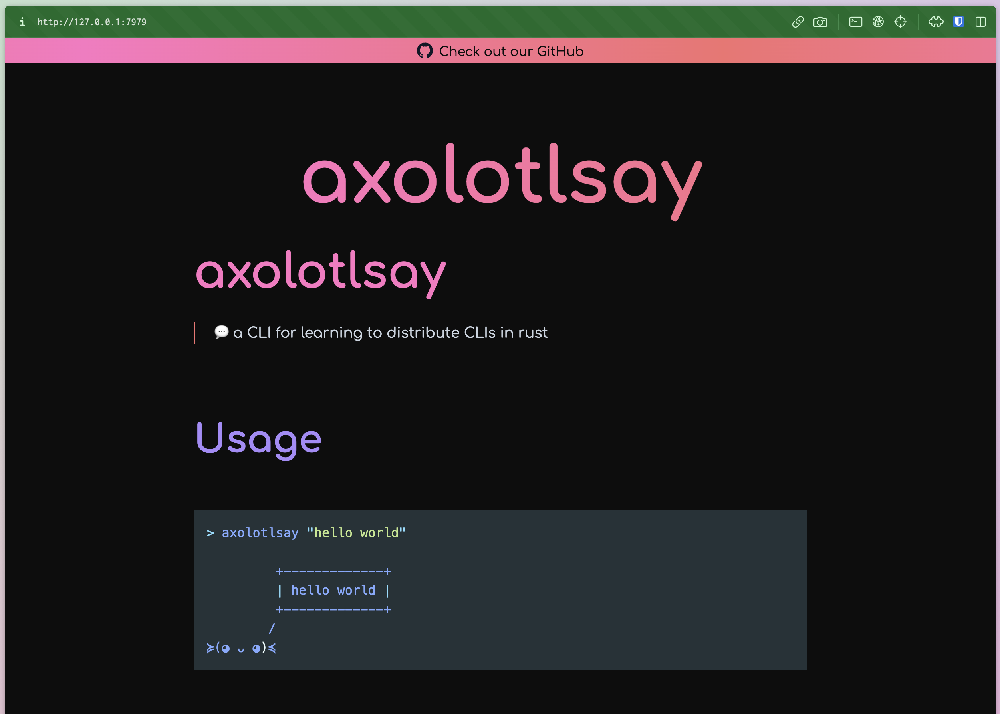
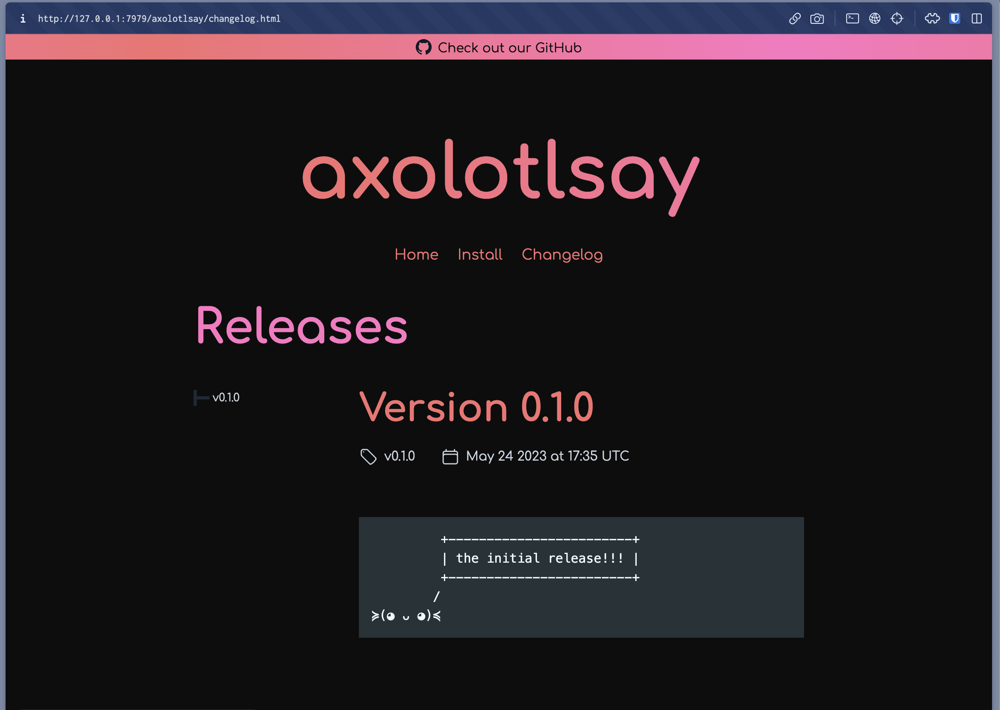

Quickstart
After you've installed oranda, it's time to give it a spin. Make sure you can execute the
oranda command, its output should look something like this:
$ oranda
🎁 generate beautiful landing pages for your projects
Usage: oranda [OPTIONS] <COMMAND>
Commands:
build
dev
serve
help Print this message or the help of the given subcommand(s)
Options:
-h, --help Print help (see more with '--help')
-V, --version Print version
GLOBAL OPTIONS:
--verbose <VERBOSE> How verbose logging should be (log level) [default: warn] [possible values:
off, error, warn, info, debug, trace]
--output-format <OUTPUT_FORMAT> The format of the output [default: human] [possible values: human, json]
Basic Setup
oranda is designed to be a tool you can simply drop into an existing project. For the purposes of this
guide, we're going to use axolotlsay, a simple CLI project, but you can use one of your own
projects, or even set up a new one from scratch! The only hard requirement oranda has is for your
project to have a readme file (README.md).
The easiest way to get a feedback loop going with oranda is to move into the directory and run oranda dev:
cd axolotlsay
oranda dev
oranda dev is a command that will automatically recompile your oranda build when you change
one of the files relevant to it. It also launches a file server that'll allow you to look at the output -
if you open localhost:7979, you'll see something like this:

oranda has picked up on our readme file and converted it into a static page! How nice!
Beyond the Basics
If we want to work with the more advanced features that oranda offers, we'll have to create a configuration file.
The default location of this file is oranda.json in the same directory where your project manifest is located.
You can view a full reference of the configuration schema here. Let's start by making the simplest and highest impact change: telling oranda that our project has releases and changelogs that it should make pages for!
axolotlsay uses GitHub Releases, and oranda knows how to handle those, so all it needs is the URL
to our repository and permission to do so. As it turns out, oranda already has the URL, because it
also knows how to find and read Cargo.toml files, and ours specifies
repository = "https://github.com/axodotdev/axolotlsay".
So let's tell oranda it's ok to look through our GitHub Releases by enabling the "changelog" feature:
{
"components": {
"changelog": true
}
}
If you now build again, it should look like this:

oranda pulled our project's releases from GitHub automatically, without us having to specify any further configuration than enabling the changelog setting!
Further Steps
For more specific configuration, check out the configuration page and its sub-pages.